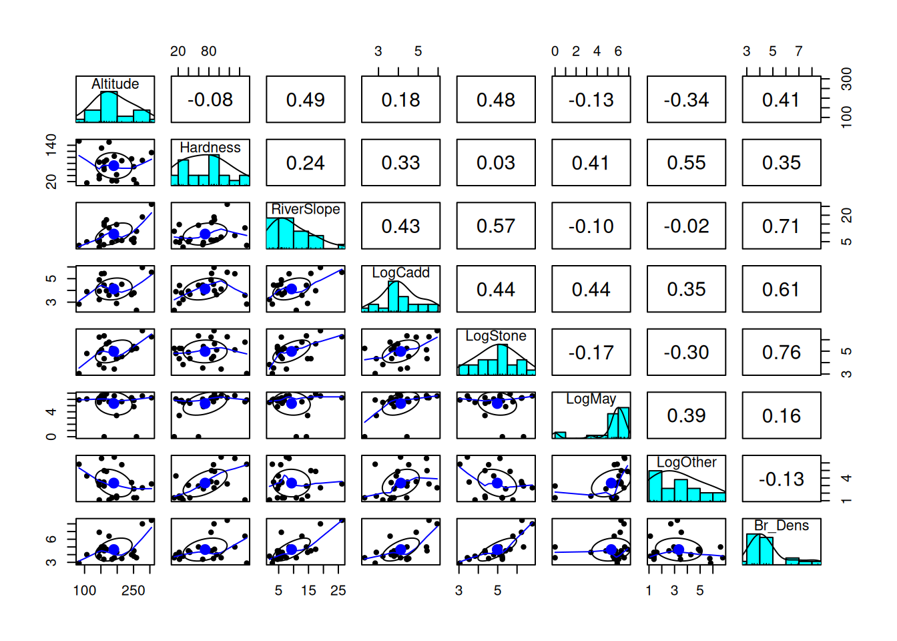
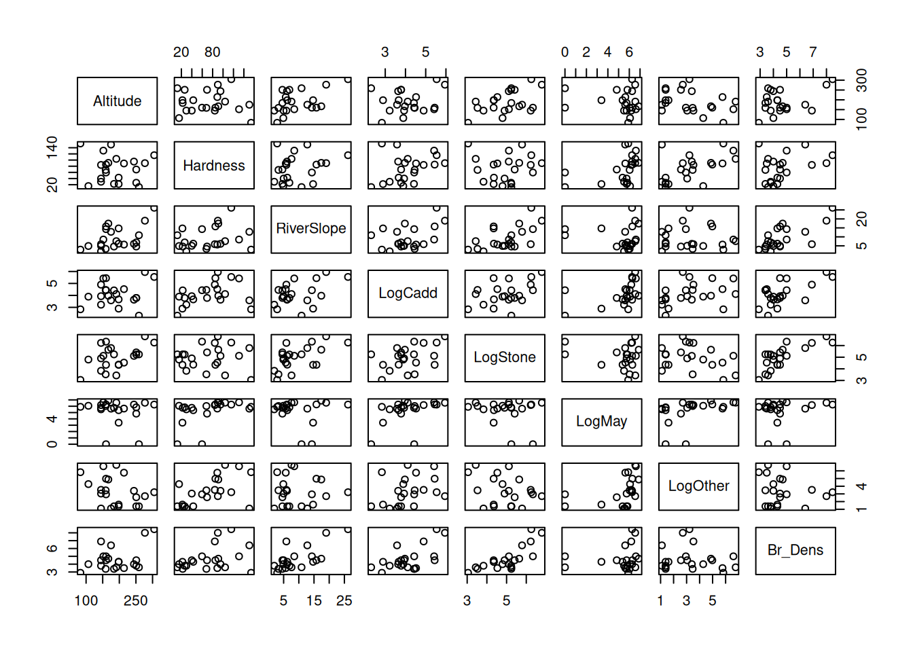
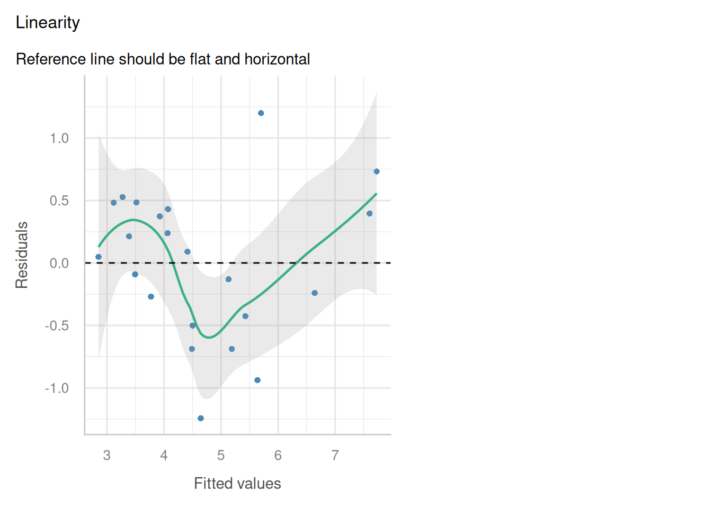
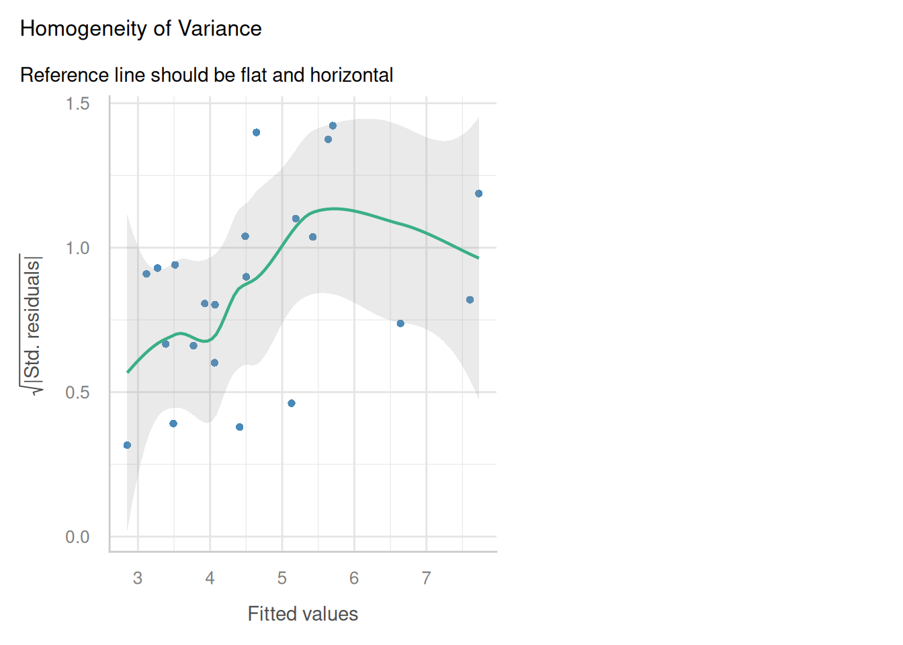
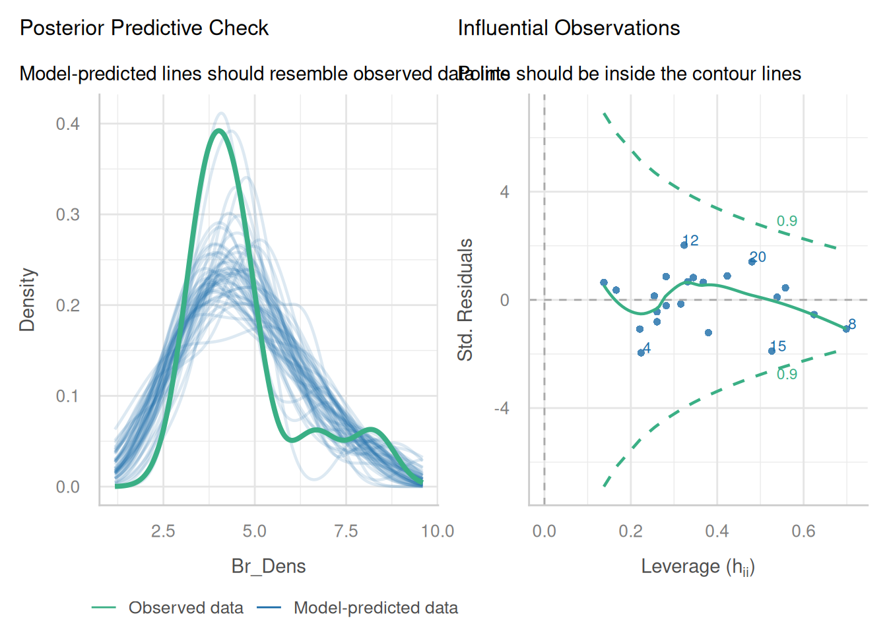
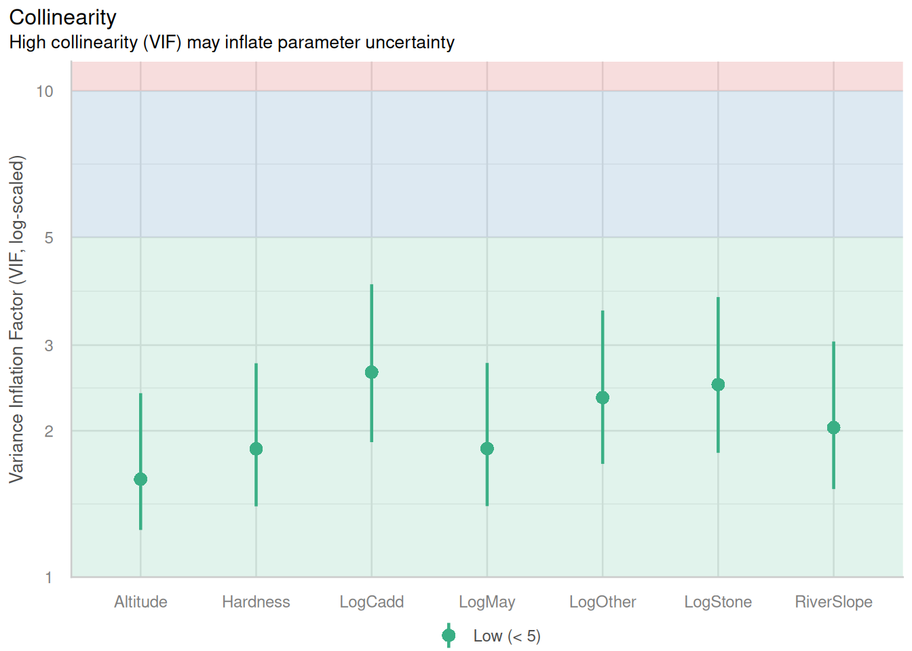
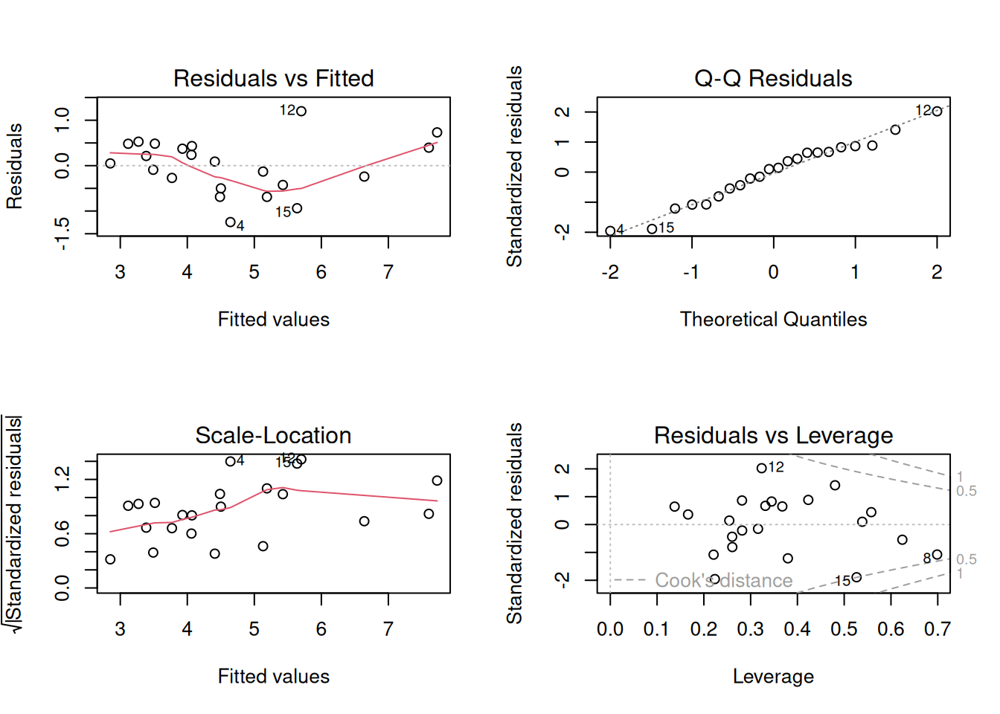

Welcome to week 9!
This week’s lecture introduced you to how we use models for prediction and how we assess the quality of the predictions.We will follow similar steps in today’s tutorial and lab class.
In this tutorial we will cover the key steps to fit a model, use it to make predictions, and then check assumptions, and select the most appropriate model.
You will learn how to:
- Split data into training and test subsets
- Fit your model to the training data and check assumptions are met
- Use the trained model to make predictions using the training and the test subsets
- Observe the quality of the predictions using appropriate statistics and plots
0.1 Packages
This tutorial uses tidyverse, readxl, moments, psych, performance and car. Install any you are missing by running the following in the console:
If a package is already installed, R will simply reinstall it — no harm done.
0.2 The data

Dippers are thrush-sized birds living mainly in the upper reaches of rivers, which feed on benthic invertebrates by probing the river beds with their beaks. The dataset in this exercise contains data from a biological survey which examined the nature of the variables thought to influence the breeding of British dippers.
Twenty-two sites were included in the survey. Some of the variables have been transformed.
Data can be found in: Dippers.csv
The variables measured were:
Altitudesite altitudeHardnesswater hardnessRiverSloperiver-bed slopeLogCaddthe numbers of caddis fly larvae, transformedLogStonethe numbers of stonefly larvae, transformedLogMaythe numbers of mayfly larvae, transformedLogOtherthe numbers of all other invertebrates collected, transformedBr_Densthe number of breeding pairs of dippers per 10 km of river
In the analyses, the four invertebrate variables were transformed using a log(x+1) transformation.
Br_Dens will be the response variable in our models.
Last week following use of the step() function, we found the most parsimonious model to be:
Br_Dens ~ Hardness + RiverSlope + LogCadd + LogStone + LogOther
Assumptions were met and the model explained 76% of variation in dipper breeding pair density.
We will use this model in our walkthrough today.
1 Data splitting
Making predictions involves substituting in new values of x into our model equation to get new values of y.
We could use single values for each of our predictor variables and substitute them into the equation, but this is unrealistic and time consuming when we have a large number of observations. We therefore use a dataset containing our new observations of x to make the predictions and feed this into our model.
To understand the true capability of our model to predict new values of y from values of x that have not been seen by the model, we need to test this on data that has not been used to fit the model. If we test our model on the same data used fit the model, we are likely to get an over-optimistic estimate of the model’s predictive performance, as the model has already seen this data.
It is common practice to split the data we have into two parts: a training (or calibration) subset and a test (or validation) subset. For each subset, we feed the predictor values into the model to get predictions of the y variable. We can then compare the predicted y with the observed y contained within each subset to get an indication of how well our model is performing.
We use the training set to fit the model and check assumptions. We can also use this subset to make predictions and check the quality of the predictions. The predictions made with this subset will often look quite good, but this is because the observed y value has been used in model fitting; therefore we do not assess the true predictive performance of the model using the training set alone. Instead we can compare the prediction quality statistics and plots with those of the test set to get an indication of overfitting.
The test subset is a set of values which are not used to fit the model, and is therefore unseen by the model. This allows us to pretend we have a new set of values, but then we have the advantage of the actual observed y variable sitting within the dataset too, so we are able to test how similar the predictions are to our real observation.
We will run through this using last week’s data:
If the model is good, we expect the predictions to be close to the actual values.
If the model is bad, we expect the predictions to be far from the actual values.
The dataset can be obtained by:
Collecting new data.
Splitting the existing data into two parts before model building.
Data splitting
Cross-validation
use cars dataset?
This week’s lecture introduced you to variable selection and how to produce a more parsimonious model. We explored developing our models by fitting the full model, checking assumptions and deciding whether anything needed transformation. Once we were happy assumptions were met we could consider whether all of our predictors were useful in explaining the variation in our response variable.
In this tutorial, we will explore a new dataset and follow the steps of model selection to produce a model that explains a sufficient amount of variation, without being unnecessarily complex.
You will learn how to:
- Check for collinearity and influential observations in a MLR model
- Run partial F-tests to compare nested models
- Implement stepwise regression using the
step()function in R
2 Setting up for our analysis
2.1 Workflow for fitting parsimonious models
1. Model development
- Start with full model and check assumptions (e.g. normality, homoscedasticity, linearity, etc.)
- Look for additional issues (e.g. multicollinearity, outliers, etc.)
-–> correlations, leverage plot, VIF plots and statistics - Consider transformations (e.g. log, sqrt, etc.).
–> Response: if assumptions aren’t met, transform the response variable
–> Predictors: it may help to explore transformations of skewed predictors before fitting the model to explore if there is a relationship present. Transforming predictors generally does not affect assumptions, but it can help to linearise relationships and make them easier to interpret. - Following any transformations, test assumptions again.
2. Model selection
- Use VIF as an initial step to get rid of highly correlated predictors.
- Perform variable selection using backward elimination (good and fast), because:
- Using r22 as a criterion is not recommended (it is not a good measure of model fit, only a good measure of variance explained).
- Using partial F-test is good, but slow.
2.2 Packages
This tutorial uses tidyverse, readxl, moments, psych, performance and car. Install any you are missing by running the following in the console:
If a package is already installed, R will simply reinstall it — no harm done.
2.3 The data
Dippers are thrush-sized birds living mainly in the upper reaches of rivers, which feed on benthic invertebrates by probing the river beds with their beaks. The dataset in this exercise contains data from a biological survey which examined the nature of the variables thought to influence the breeding of British dippers.
Twenty-two sites were included in the survey. Some of the variables have been transformed.
Data can be found in: Dippers.csv
The variables measured were:
Altitudesite altitudeHardnesswater hardnessRiverSloperiver-bed slopeLogCaddthe numbers of caddis fly larvae, transformedLogStonethe numbers of stonefly larvae, transformedLogMaythe numbers of mayfly larvae, transformedLogOtherthe numbers of all other invertebrates collected, transformedBr_Densthe number of breeding pairs of dippers per 10 km of river
In the analyses, the four invertebrate variables were transformed using a log(x+1) transformation.
Br_Dens will be the response variable in our models.
3 Analysis
3.1 Model development
(i) Read in the data and investigate the relationship between each of your variables. Describe the relationships, supported by values (correlation coefficient) and plots.
Rows: 22
Columns: 8
$ Altitude <int> 259, 198, 251, 184, 145, 145, 198, 160, 251, 159, 160, 145,…
$ Hardness <dbl> 12.20, 22.00, 26.30, 22.50, 29.50, 39.90, 42.80, 59.60, 69.…
$ RiverSlope <dbl> 10.90, 14.70, 6.90, 4.60, 1.91, 5.00, 6.20, 14.30, 4.60, 3.…
$ LogCadd <dbl> 2.303, 2.890, 3.784, 4.419, 3.219, 3.932, 3.664, 4.431, 3.7…
$ LogStone <dbl> 5.242, 4.344, 5.231, 5.242, 3.829, 4.898, 4.357, 6.337, 5.4…
$ LogMay <dbl> 0.000, 3.401, 5.826, 5.749, 5.509, 5.749, 5.371, 0.000, 4.8…
$ LogOther <dbl> 1.386, 1.609, 1.386, 1.386, 1.099, 3.045, 1.386, 2.944, 2.5…
$ Br_Dens <dbl> 3.60, 4.30, 3.80, 3.40, 3.80, 4.50, 4.30, 5.00, 4.50, 3.40,…
Attaching package: 'psych'The following objects are masked from 'package:ggplot2':
%+%, alpha
Altitude Hardness RiverSlope LogCadd LogStone
Altitude 1.00000000 -0.08170082 0.49003652 0.1807820 0.47736562
Hardness -0.08170082 1.00000000 0.24208735 0.3337586 0.02951218
RiverSlope 0.49003652 0.24208735 1.00000000 0.4313081 0.57479242
LogCadd 0.18078205 0.33375857 0.43130806 1.0000000 0.44347440
LogStone 0.47736562 0.02951218 0.57479242 0.4434744 1.00000000
LogMay -0.12782013 0.41356844 -0.09616686 0.4378978 -0.16744101
LogOther -0.33859788 0.55399249 -0.02007183 0.3521440 -0.30025225
Br_Dens 0.40635349 0.35034817 0.71022164 0.6126891 0.76294367
LogMay LogOther Br_Dens
Altitude -0.12782013 -0.33859788 0.4063535
Hardness 0.41356844 0.55399249 0.3503482
RiverSlope -0.09616686 -0.02007183 0.7102216
LogCadd 0.43789780 0.35214400 0.6126891
LogStone -0.16744101 -0.30025225 0.7629437
LogMay 1.00000000 0.38820063 0.1562659
LogOther 0.38820063 1.00000000 -0.1277591
Br_Dens 0.15626585 -0.12775913 1.0000000
Between Br_Dens and other variables, there are a number of relatively stong correlations, particularly with LogStone (r = 763), RiverSlope (r = 0.710) and LogCadd (r = 0.613).
There are also some strong correlations between the predictor variables themselves, particularly between RiverSlope and LogStone (r = 0.575) and LogOther and Hardness (r = 0.554). This could be an issue for our model, as collinearity can make it difficult to interpret the model parameters and can inflate the standard errors of the estimates.
We can confirm if correlations between predictors may be an issue with the model by observing the Variance inflation factor (VIF) later on when we check our model assumptions.
(ii) Fit a multiple linear regression model to the data using all variables. Set Br_Dens as the response variable and the remaining variables as the predictors. This will be known as the ‘full model’.
(iii) Check the assumptions of your model. Do you need to transform any variables? What does the Variance Inflation Factor (VIF) tell you about the collinearity between predictor variables?
The VIF will appear as one of the plots in the check_model() function, but it can also be helpful to get the values. You can use the vif() function from the car package to get the VIF values for each predictor variable.
The check_model function has been squishing plots, so it may be better at times to plot them individually. You may use the following code, adapted to your model object names:





Altitude Hardness RiverSlope LogCadd LogStone LogMay LogOther
1.589862 1.835610 2.030493 2.639160 2.489586 1.838431 2.341119 
Linearity: The relationship between the predictors and the response variable appears to be linear, as the residuals are mostly scattered around the horizontal line at zero in the residuals vs fitted plot.
Independence: The residuals appear to be independent, as there is no clear pattern in the residuals vs fitted plot.
Normality: The residuals appear to be approximately normally distributed, as the points in the Q-Q plot roughly follow a straight line. When we look at the
check_model()version of the plot we a slight n-shape to the points, but this is only small compared to the overall distribution of the points, so we are not too concerned about this.Equal variance: The residuals appear to have constant variance, as there is no clear pattern or fanning present in the standardised residuals vs fitted plot (scale-location in the base plot).
Leverage: No single observations lying outside the Cook’s distance line, indicating no influential observations.
VIF and collinearity
VIF Thresholds vary, depending on who you ask. General rule is that if it is greater than 10, then you need to remove the associated predictor. Some conservative people prefer a value of 5, so we will go with this.
Our threshold is 5, so given all of our VIFs are below this, we are not too concerned about collinearity. However, because they are close to the threshold it is something to keep in mind when interpreting the model parameters.
(iv) Make a note of the model parameters and fit statistics for the full model.
Call:
lm(formula = Br_Dens ~ Altitude + Hardness + RiverSlope + LogCadd +
LogStone + LogMay + LogOther, data = dippers)
Residuals:
Min 1Q Median 3Q Max
-1.24313 -0.38686 0.06925 0.42252 1.19902
Coefficients:
Estimate Std. Error t value Pr(>|t|)
(Intercept) -0.881054 1.215055 -0.725 0.4803
Altitude -0.001801 0.003537 -0.509 0.6186
Hardness 0.009956 0.004961 2.007 0.0645 .
RiverSlope 0.080254 0.035781 2.243 0.0416 *
LogCadd 0.408917 0.274412 1.490 0.1584
LogStone 0.604083 0.249207 2.424 0.0295 *
LogMay 0.114607 0.114116 1.004 0.3323
LogOther -0.267073 0.131828 -2.026 0.0623 .
---
Signif. codes: 0 '***' 0.001 '**' 0.01 '*' 0.05 '.' 0.1 ' ' 1
Residual standard error: 0.7208 on 14 degrees of freedom
Multiple R-squared: 0.8433, Adjusted R-squared: 0.765
F-statistic: 10.77 on 7 and 14 DF, p-value: 0.0001085We can see that there are two significant predictors (RiverSlope and LogStone) in the full model, but there are also a number of non-significant predictors. The adjusted R2 value is 0.77, which indicates that the model explains 77% of the variation in the response variable.
Because there are so many non-significant predictors in the model, we may want to consider removing some of them to produce a more parsimonious model.
(v) Select the least significant predictor and remove it from the model.
In this case, the least significant predictor is Altitude (P = 0.619). Remove it from the model and run the model again. This will be known as the ‘reduced model’.
(vi) Is the reduced model an improvement on the full model? How can you tell? What statistics would you look at to determine this?
Call:
lm(formula = Br_Dens ~ Altitude + Hardness + RiverSlope + LogCadd +
LogStone + LogMay + LogOther, data = dippers)
Residuals:
Min 1Q Median 3Q Max
-1.24313 -0.38686 0.06925 0.42252 1.19902
Coefficients:
Estimate Std. Error t value Pr(>|t|)
(Intercept) -0.881054 1.215055 -0.725 0.4803
Altitude -0.001801 0.003537 -0.509 0.6186
Hardness 0.009956 0.004961 2.007 0.0645 .
RiverSlope 0.080254 0.035781 2.243 0.0416 *
LogCadd 0.408917 0.274412 1.490 0.1584
LogStone 0.604083 0.249207 2.424 0.0295 *
LogMay 0.114607 0.114116 1.004 0.3323
LogOther -0.267073 0.131828 -2.026 0.0623 .
---
Signif. codes: 0 '***' 0.001 '**' 0.01 '*' 0.05 '.' 0.1 ' ' 1
Residual standard error: 0.7208 on 14 degrees of freedom
Multiple R-squared: 0.8433, Adjusted R-squared: 0.765
F-statistic: 10.77 on 7 and 14 DF, p-value: 0.0001085
Call:
lm(formula = Br_Dens ~ Hardness + RiverSlope + LogCadd + LogStone +
LogMay + LogOther, data = dippers)
Residuals:
Min 1Q Median 3Q Max
-1.21925 -0.36896 0.03995 0.40149 1.27830
Coefficients:
Estimate Std. Error t value Pr(>|t|)
(Intercept) -1.112573 1.098551 -1.013 0.3272
Hardness 0.010101 0.004829 2.092 0.0539 .
RiverSlope 0.073829 0.032643 2.262 0.0390 *
LogCadd 0.405503 0.267470 1.516 0.1503
LogStone 0.587737 0.240949 2.439 0.0276 *
LogMay 0.111440 0.111096 1.003 0.3317
LogOther -0.251481 0.125014 -2.012 0.0626 .
---
Signif. codes: 0 '***' 0.001 '**' 0.01 '*' 0.05 '.' 0.1 ' ' 1
Residual standard error: 0.7028 on 15 degrees of freedom
Multiple R-squared: 0.8404, Adjusted R-squared: 0.7766
F-statistic: 13.17 on 6 and 15 DF, p-value: 3.139e-05Removing the Altitude predictor from the model has slightly increased the adjusted R2 value. This is an improvement in terms of parsimony, but we will need to use hypothesis testing to determine whether the reduced model is a significant improvement on the full model. We can do this using an F-test.
You should now be able to prepare an appropriate model by refining it, checking your assumptions, and ensuring collinearity is not an issue.
3.2 Model selection with F-tests
We wil use the partial F-test to determine whether there is a significant difference between the models.
(i) State hypotheses
H0: no significant difference between the full and reduced models H1: There is a significant difference between the full and reduced models
If we fail to reject H0, then we would opt for the reduced model as it is more parsimonious (i.e. it is explaining a similar amount of variation with fewer predictors).
If we reject H0, then we would opt for the full model as it is a significant improvement on the reduced model.
(ii) Run the test
Once we have established our hypotheses, we can perform the F-test using the anova() function to compare the full and reduced models.
Analysis of Variance Table
Model 1: Br_Dens ~ Altitude + Hardness + RiverSlope + LogCadd + LogStone +
LogMay + LogOther
Model 2: Br_Dens ~ Hardness + RiverSlope + LogCadd + LogStone + LogMay +
LogOther
Res.Df RSS Df Sum of Sq F Pr(>F)
1 14 7.2739
2 15 7.4085 -1 -0.13464 0.2591 0.6186(iii) Are the models significantly different?
The P-value is 0.6186, which is larger than 0.05, so we fail to reject the null hypothesis.
This means that the full model is not a significant improvement on the reduced model, and we would opt for the reduced model as it is more parsimonious.
You should now be able to use an F-test to determine whether the reduced model is a significant improvement on the full model.
Remember: the F-test is only useful if comparing nested models.
4 Model selection using Stepwise regression
When we have many predictors, this manual testing can become time consuming, so we can choose to use the step() function in R, which performs stepwise regression. This function will automatically remove the least significant predictor and test the model again, until it finds the best model based on the AIC criterion.
(i) Run the step() function on the full model to perform stepwise regression.
Start: AIC=-8.35
Br_Dens ~ Altitude + Hardness + RiverSlope + LogCadd + LogStone +
LogMay + LogOther
Df Sum of Sq RSS AIC
- Altitude 1 0.13464 7.4085 -9.9451
- LogMay 1 0.52404 7.7979 -8.8181
<none> 7.2739 -8.3486
- LogCadd 1 1.15372 8.4276 -7.1097
- Hardness 1 2.09230 9.3662 -4.7866
- LogOther 1 2.13246 9.4063 -4.6925
- RiverSlope 1 2.61383 9.8877 -3.5945
- LogStone 1 3.05288 10.3268 -2.6387
Step: AIC=-9.95
Br_Dens ~ Hardness + RiverSlope + LogCadd + LogStone + LogMay +
LogOther
Df Sum of Sq RSS AIC
- LogMay 1 0.49696 7.9055 -10.5167
<none> 7.4085 -9.9451
- LogCadd 1 1.13522 8.5437 -8.8086
- LogOther 1 1.99863 9.4071 -6.6906
- Hardness 1 2.16061 9.5691 -6.3150
- RiverSlope 1 2.52643 9.9349 -5.4897
- LogStone 1 2.93869 10.3472 -4.5952
Step: AIC=-10.52
Br_Dens ~ Hardness + RiverSlope + LogCadd + LogStone + LogOther
Df Sum of Sq RSS AIC
<none> 7.9055 -10.5167
- RiverSlope 1 2.1227 10.0282 -7.2842
- LogOther 1 2.3128 10.2182 -6.8712
- LogStone 1 2.4742 10.3797 -6.5262
- LogCadd 1 2.9091 10.8146 -5.6232
- Hardness 1 3.3747 11.2801 -4.6960(ii) What is the final model that the step() function has produced? How does it compare to the full and reduced models?
Since we have stored the step() output as an object, we can just call the object, which will show us the final model:
Call:
lm(formula = Br_Dens ~ Hardness + RiverSlope + LogCadd + LogStone +
LogOther, data = dippers)
Coefficients:
(Intercept) Hardness RiverSlope LogCadd LogStone LogOther
-0.72462 0.01181 0.06538 0.54880 0.51249 -0.26813
Call:
lm(formula = Br_Dens ~ Hardness + RiverSlope + LogCadd + LogStone +
LogOther, data = dippers)
Residuals:
Min 1Q Median 3Q Max
-1.18190 -0.49120 -0.08373 0.41721 1.31073
Coefficients:
Estimate Std. Error t value Pr(>|t|)
(Intercept) -0.724619 1.028416 -0.705 0.4912
Hardness 0.011811 0.004519 2.613 0.0188 *
RiverSlope 0.065384 0.031545 2.073 0.0547 .
LogCadd 0.548799 0.226169 2.426 0.0274 *
LogStone 0.512494 0.229020 2.238 0.0398 *
LogOther -0.268128 0.123932 -2.164 0.0460 *
---
Signif. codes: 0 '***' 0.001 '**' 0.01 '*' 0.05 '.' 0.1 ' ' 1
Residual standard error: 0.7029 on 16 degrees of freedom
Multiple R-squared: 0.8297, Adjusted R-squared: 0.7765
F-statistic: 15.59 on 5 and 16 DF, p-value: 1.169e-05We can see that the selected model is:
Br_Dens ~ Hardness + RiverSlope + LogCadd + LogStone + LogOther
Or with the addition of the partial regression coefficients, our equation is:
Br_Dens = -0.725 + 0.012 * Hardness + 0.065 * RiverSlope + 0.549 * LogCadd + 0.512 * LogStone - 0.268 * LogOther
We can see there has also been a marginal change in the adjusted R2 value, which is now 0.7765, compared to 0.765 for the full model and 0.7766 for the reduced model. This supports the idea that the full model explained a similar amount of variation in the response compared to the simplest model obtained from the step() function. Therefore it makes sense to select the simpler model.
(iii) How does the AIC of the stepwise regression model compare to the full and reduced models?
We can test this using the AIC() function:
df AIC
full_model 9 56.08470
reduced_model 8 54.48820
step_model 7 53.91655Full_model AIC = 56.1
Reduced_model AIC = 54.5
step_model AIC = 53.9
As we select the model with the smallest AIC, we can confirm that the model selected by the step() function is better.
You may notice that the AIC values are different between the step() function and the AIC() function. This is because the step() function uses a different method to calculate the AIC values, which is based on the likelihood of the model, while the AIC() function uses a different method based on the residual sum of squares.
You should now be able to run the step() function to select the most appropriate model.
Wrap-up
In this tutorial, we used the dippers dataset to get some practice testing model assumptions and checking for collinearity. We then used partial F-tests and stepwise regression to select a more parsimonious model.
Example exam questions
What assumptions do we need to check for when fitting a multiple linear regression?
Why don’t we just rely on the adjusted r2 to compare models?
Can F-tests be run on non-nested models? Why or why not?